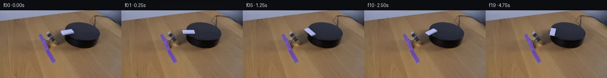

![首帧]()

Round 00
2026-11-05T05:54:34.280596+00:00像素候选变化代码 +222/−0inspection 更新
pixels 1a20683ef19cbb68 · code 1638dd1ce228dd11
查看本轮 generate.py 真实 diff
--- previous/generate.py
+++ current/generate.py
@@ -0,0 +1,222 @@
+"""Local pixel continuation of first_frame.png; no external renderer/model."""
+from pathlib import Path
+import json
+import numpy as np
+from PIL import Image, ImageDraw, ImageFilter
+from scipy.ndimage import gaussian_filter, map_coordinates
+from artifact_io import save
+
+ROOT = Path(__file__).resolve().parent
+S = 8
+W, H = 256, 144
+original = np.asarray(Image.open(ROOT / 'first_frame.png').convert('RGB'))
+Y, X = np.mgrid[:H, :W].astype(float)
+# Reconstruct only the object/shadow footprint. The ellipse is fitted to the
+# visible platform outline in the supplied image, not to another reference.
+CX, CY, RX, RY, ROT = 172.8236, 45.8676, 37.0996, 20.31, .155585
+c, s = np.cos(ROT), np.sin(ROT)
+def ellipse(x, y, z=0):
+ dx, dy = x-CX, y-CY-z
+ return ((c*dx+s*dy)/RX)**2 + ((-s*dx+c*dy)/RY)**2
+Q = ellipse(X, Y)
+
+start_outline = [(127.6,42.5),(151.1,38.8),(156.8,45.8),
+ (156.5,49.8),(132.2,53.1),(128.1,47.3)]
+def polygon_mask(points, blur=0):
+ canvas=Image.new('L',(W*S,H*S),0)
+ ImageDraw.Draw(canvas).polygon([(x*S,y*S) for x,y in points],fill=255)
+ if blur: canvas=canvas.filter(ImageFilter.GaussianBlur(blur*S))
+ return np.asarray(canvas.resize((W,H),Image.Resampling.LANCZOS)).astype(float)/255
+white_mask = polygon_mask(start_outline,.30)
+# Old shadow on the top; exclude the legitimate side wall and outer table.
+shadow_outline=[(132,47.7),(155.8,45.9),(159,49.0),(155.8,54.8),
+ (148,57.1),(140.0,53.0)]
+old_shadow = polygon_mask(shadow_outline, .55)*(Q < .995)
+removal = np.maximum(white_mask, old_shadow)
+
+# Infer smooth top colour from nearby unobstructed pixels, retaining its
+# subtle spatial lighting gradient. The training pixels are all in frame 00.
+fit_ok=(X>137)&(X<175)&(Y>29)&(Y<61)&(Q<.91)&(removal<.01)
+fit_ok &= (original[:,:,0]>34)&(original[:,:,0]<60)
+features=np.stack([np.ones_like(X),(X-146)/20,(Y-44)/12,((Y-44)/12)**2],axis=-1)
+coeff=np.linalg.lstsq(features[fit_ok],original[fit_ok].astype(float),rcond=None)[0]
+top_colour=np.clip(features@coeff, [33,35,45],[47,50,64])
+rng=np.random.default_rng(94)
+noise=gaussian_filter(rng.normal(0,.6,(H,W)),.5)
+top_colour += noise[:,:,None]
+# Thin rim: fitted ellipse has a slightly darker beveled outer perimeter.
+rim=np.clip((Q-.945)/.060,0,1)
+top_colour *= 1-.20*rim[:,:,None]
+
+# Table under the starting overhang: nearby table colours extrapolated over
+# eight pixels, with a little copied wood variation from a clean left strip.
+yi=np.arange(H)
+left_colour=original[yi,126].astype(float)
+base_table=left_colour[:,None,:]+(X-126)[:,:,None]*np.array([-2.2,-1.9,-1.5])
+wood=original[:,114:154].astype(float)
+wood_detail=wood-gaussian_filter(wood,(1.1,1.1,0))
+# Only this local crop is ever used; clamp to avoid bright reconstruction.
+base_table[:,124:164] += wood_detail*.40
+base_table=np.clip(base_table,0,255)
+# Cylinder side is the swept ellipse 13.8 pixels below its top.
+min_q=np.min(np.stack([ellipse(X,Y,z) for z in np.linspace(0,13.8,40)]),axis=0)
+side_alpha=np.clip((1.016-min_q)/.040,0,1)
+side_colour=np.stack([16+.12*(X-140),14+.11*(X-140),15+.17*(X-140)],axis=-1)
+side_colour=np.clip(side_colour,[13,12,13],[24,23,29])
+reconstructed=base_table*(1-side_alpha[:,:,None])+side_colour*side_alpha[:,:,None]
+top_alpha=np.clip((1.020-Q)/.045,0,1)
+reconstructed=reconstructed*(1-top_alpha[:,:,None])+top_colour*top_alpha[:,:,None]
+clean=original.astype(float)*(1-removal[:,:,None])+reconstructed*removal[:,:,None]
+clean=np.clip(np.rint(clean),0,255).astype(np.uint8)
+Image.fromarray(clean).save(ROOT/'.tmp/clean_plate.png')
+
+# Ground-plane projection. Its singular values and tilt match the platform's
+# ellipse. Positive angle rotates the right end clockwise into the foreground.
+P=np.array([[1.0,.51013],[-.175,.61243]])
+center=np.array([141.8,44.7])
+length,width=22.2,9.3
+thickness=2.55
+local_corners=np.array([[-length/2,-width/2],[length/2,-width/2],
+ [length/2,width/2],[-length/2,width/2]])
+# Render locally at 8x resolution and composite its antialiased alpha at the
+# original resolution, so unedited pixels never undergo resampling.
+x0,y0,x1,y1=122,29,165,64
+rw,rh=(x1-x0)*S,(y1-y0)*S
+hy,hx=np.mgrid[:rh,:rw].astype(float)
+screen_grid=np.stack([x0+(hx+.5)/S,y0+(hy+.5)/S],axis=-1)
+
… diff truncated; 135 more lines …